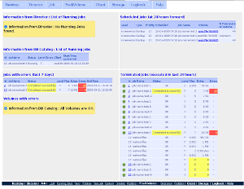
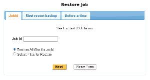
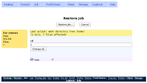
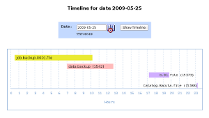

Что такое Webacula?
Webacula - Web + Bacula - веб интерфейс для Bacula backup system.
Новости
- Полная поддержка MySQL, PostgreSQL и Sqlite. Новое!
- Для веб-дизайнеров : теперь просто создавать новые скины. Новое!
- Перенумерация версий. Теперь основной номер версии Webacula будет равен номеру версии Bacula
- Восстановление самого свежего бэкапа для Клиента
- Восстановление бэкапа для Клиента, сделанного перед указанным временем
- Улучшенный дизайн
- RSS лента
Скриншоты
| Главная страница Webacula |  |
| Восстановление Задания, часть 1 |  |
| Восстановление Задания, часть 2 |  |
| Главное меню |

|
| График |  |
Видео
Обзор Webacula :
Возможности
Основные возможности :
- Запуск Заданий
- Восстановление всех файлов или выбранных файлов для указанного Id Задания
- Восстановление самого свежего бэкапа для клиента
- Восстановление бэкапа, сделанного перед указанным временем
- Построение временной диаграмы выполнения Заданий
- Монтирование, размонтирование Хранилищ
- Показ Заданий, завершившихся с ошибками, сбоями (за последние 7 дней)
- Показ состояния ваших Томов
- Показ запланированных Заданий (на ближайшие 24 часа)
- Показ всех выполняющихся Заданий
- Показ завершившихся Заданий (выполненных за последние 24 часа)
- Поиск Заданий по нескольким критериям
- Выдача детальной информации о Пулах, Томах, Хранилищах и Клиентах
- RSS лента
- Мультиязычность. В настоящее время поддерживаются языки: английский, немецкий, французский, бразильский португальский, русский.
- Журнал - простой электронный журнал для записей о бэкапах. Оператор вручную работает с журналом: добавляет, изменяет, удаляет записи. Записи могут содержать ссылки (обычные веб-ссылки по которым можно кликать) на Задания Bacula или ссылки на другие записи в журнале. В журнал записывается информация, например, о различных сбоях в Заданиях, и других нештатных ситуациях. Журнал хранится в отдельной БД "webacula", теперь поддерживаются MySQL, PostgreSQL и Sqlite.
Требования к системе
- Bacula 3.0 или выше
- Поддерживаются MySQL, PostgreSQL и Sqlite
- Zend Framework 1.8.3 или выше
- Zend Framework требует PHP 5 версии 5.2.4 или выше с установленным расширением PDO. Смотрите the system requirements appendixдля более детальной информации
- Apache и mod_rewrite
- Установленный пакет php-gd
- Создать отдельную БД "webacula" (скриптом из каталога install/) для возможности ведения Журнала и восстановления Заданий
- Включенный JavaScript
- http://php.net/dom для RSS ленты. Установленный пакет php-xml
- Совместимость с браузерами
Статьи
Webacula в веб:
НаверхЗагрузка
Загрузить :
НаверхИсходный код
Git репозитории :
Git clone URLs :
git://webacula.git.sourceforge.net/gitroot/webacula/webacula git://github.com/tim4dev/webacula.gitНаверх
Рассылки
Почтовые рассылки :
- webacula-announce (Archive)
- webacula-users - для пользователей (Archive)
Лицензия
Copyright 2007, 2008, 2009 Yuri Timofeev tim4dev@gmail.com

Webacula - это свободная программа; вы можете повторно распространять её и/или модифицировать её в соответствии со Стандартной Общественной Лицензей GNU, опубликованной Фондом Свободного ПО; либо версии 3, либо (по вашему выбору) любой более поздней версии.
Webacula распространяется в надежде, что она будет полезной, но БЕЗ КАКИХ-ЛИБО ГАРАНТИЙ; даже без подразумеваемых гарантий КОММЕРЧЕСКОЙ ЦЕННОСТИ или ПРИГОДНОСТИ ДЛЯ КОНКРЕТНОЙ ЦЕЛИ. Для получения подробных сведений смотрите Стандартную Общественную Лицензию GNU.
Вы должны были получить копию Стандартной Общественной Лицензии GNU вместе с этой программой; если нет, смотрите http://www.gnu.org/licenses/.

Наверх